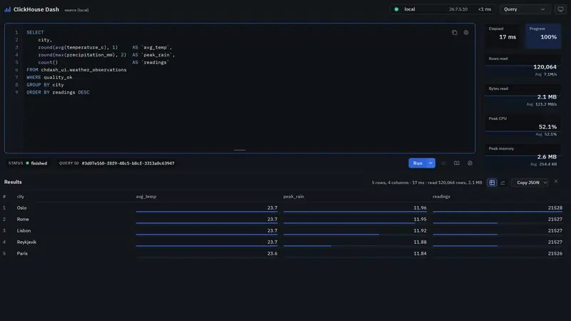
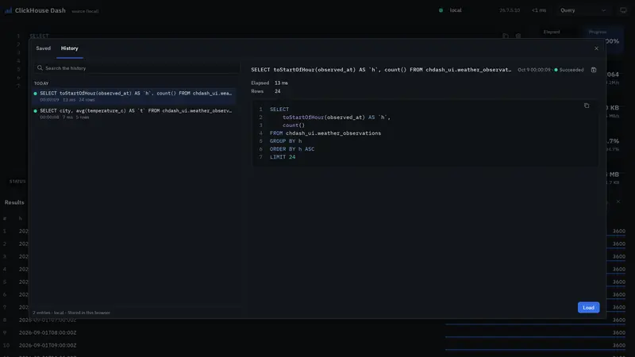
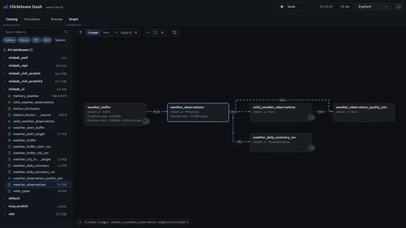
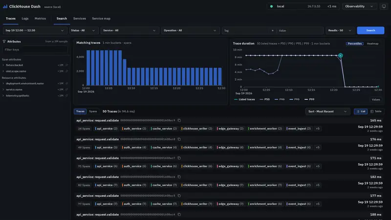
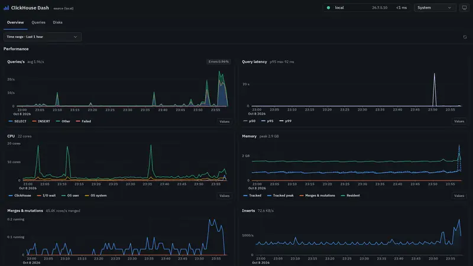
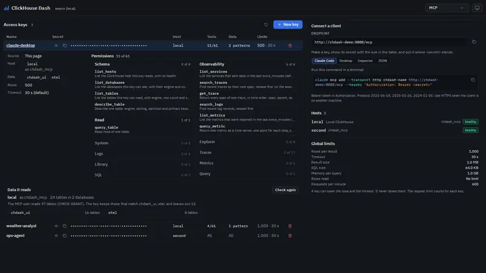

A real-time dashboard for ClickHouse.
Query, explore, trace and monitor your servers from one 6.6 MB binary.
Linux and macOS, amd64 and arm64. MIT license.
74 seconds, with voice-over and music. Music: Happy Beats & Business Moves Vol. 12 by Sascha Ende (ende.app), CC BY 4.0.
Everything you check on a ClickHouse server, in one place.

Query
Streamed results, a SQL formatter, live read rates, CPU and memory while it runs, then a chart in one click.

Library
Folders of saved queries that the whole team can open, and a History of every run.

Explorer
Every database sized on disk. Open a table down to its parts and its DDL, and follow the lineage between tables and views.

Observability
Traces with a duration heatmap, trace comparison, waterfall and service map. Logs and metrics sit next to them.

System
Live charts of the server, the heaviest query shapes of the hour, disks and replication.

MCP
Give an AI assistant a key. Each key has its own hosts, tools and tables, and runs as a read-only user.
Reads what your OpenTelemetry Collector already writes.
Dash works on the tables of the OpenTelemetry Collector contrib ClickHouse exporter. There is no second store to feed.
otel_tracesTracesheatmap, waterfall, service mapotel_logsLogstoken search, per-trace logsotel_metrics_*Metricsgauge, sum, histogram, exponential histogram, summaryRun it in three steps.
Download
curl -fsSLO https://github.com/Circular-fi/Clickhouse-dash/releases/download/v1.0.1/chdash_1.0.1_linux_amd64.tar.gz
tar xzf chdash_1.0.1_linux_amd64.tar.gzPoint it at ClickHouse
clickhouse {
host {
name = "local"
label = "My ClickHouse"
runner_uri = "clickhouse://default:@localhost:9000"
system_uri = "clickhouse://default:@localhost:9000"
}
}Save it as config.hcl.
Run
./chdash --config config.hclOpen http://localhost:8080.
The archive is 6.6 MB and has no runtime dependency. Checksums: SHA256SUMS. Next: configuration, operations, MCP.